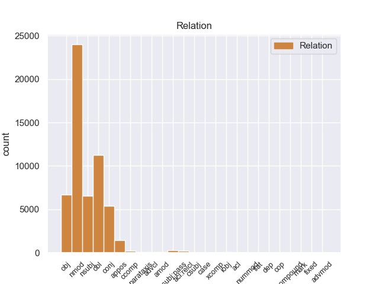
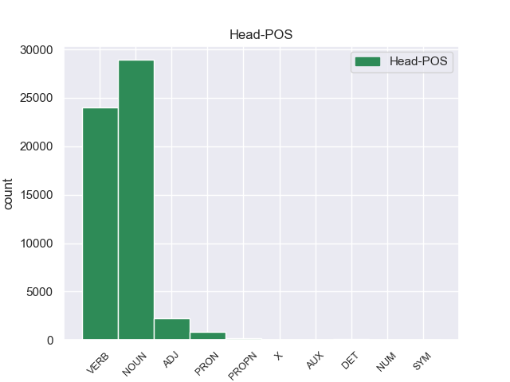
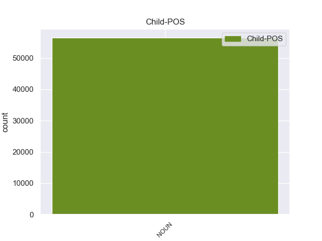

Distribution of features within this leaf



Agreement Rules sorted by frequency.
- When the dependent token is the nominal modifier(nmod) of the head token, and the dependent token is NOUN.
1 La _ _ _ _ 0 _ _ _
2 Isla _ _ _ _ 0 _ _ _
3 James _ _ _ _ 0 _ _ _
4 es _ _ _ _ 0 _ _ _
5 una _ _ _ _ 0 _ _ _
6 isla isla NOUN _ Gender=Fem|Number=Sing 0 _ _ _
7 de _ _ _ _ 0 _ _ _
8 el _ _ _ _ 0 _ _ _
9 archipiélago archipiélago NOUN _ Gender=Masc|Number=Sing 6 nmod _ _
10 de _ _ _ _ 0 _ _ _
11 las _ _ _ _ 0 _ _ _
12 Islas _ _ _ _ 0 _ _ _
13 San _ _ _ _ 0 _ _ _
14 Juan _ _ _ _ 0 _ _ _
15 , _ _ _ _ 0 _ _ _
16 situadas _ _ _ _ 0 _ _ _
17 en _ _ _ _ 0 _ _ _
18 el _ _ _ _ 0 _ _ _
19 Estrecho _ _ _ _ 0 _ _ _
20 de _ _ _ _ 0 _ _ _
21 Georgia _ _ _ _ 0 _ _ _
22 . _ _ _ _ 0 _ _ _
1 Van _ _ _ _ 0 _ _ _
2 Damme _ _ _ _ 0 _ _ _
3 coreografió coreografiar VERB _ Mood=Ind|Number=Sing|Person=3|Tense=Past|VerbForm=Fin 0 _ _ _
4 de _ _ _ _ 0 _ _ _
5 la _ _ _ _ 0 _ _ _
6 pelea pelea NOUN _ Gender=Fem|Number=Sing 3 obl _ _
7 final _ _ _ _ 0 _ _ _
8 entre _ _ _ _ 0 _ _ _
9 su _ _ _ _ 0 _ _ _
10 personaje _ _ _ _ 0 _ _ _
11 y _ _ _ _ 0 _ _ _
12 el _ _ _ _ 0 _ _ _
13 personaje _ _ _ _ 0 _ _ _
14 de _ _ _ _ 0 _ _ _
15 Stallone _ _ _ _ 0 _ _ _
16 . _ _ _ _ 0 _ _ _
1 La _ _ _ _ 0 _ _ _
2 hidrocefalia _ _ _ _ 0 _ _ _
3 comunicante _ _ _ _ 0 _ _ _
4 ocurre _ _ _ _ 0 _ _ _
5 cuando _ _ _ _ 0 _ _ _
6 el _ _ _ _ 0 _ _ _
7 flujo flujo NOUN _ Gender=Masc|Number=Sing 13 nsubj _ _
8 de _ _ _ _ 0 _ _ _
9 el _ _ _ _ 0 _ _ _
10 líquido _ _ _ _ 0 _ _ _
11 cefaloraquídeo _ _ _ _ 0 _ _ _
12 se _ _ _ _ 0 _ _ _
13 ve ver VERB _ Mood=Ind|Number=Sing|Person=3|Tense=Pres|VerbForm=Fin 0 _ _ _
14 bloqueado _ _ _ _ 0 _ _ _
15 después _ _ _ _ 0 _ _ _
16 de _ _ _ _ 0 _ _ _
17 salir _ _ _ _ 0 _ _ _
18 de _ _ _ _ 0 _ _ _
19 los _ _ _ _ 0 _ _ _
20 ventrículos _ _ _ _ 0 _ _ _
21 a _ _ _ _ 0 _ _ _
22 el _ _ _ _ 0 _ _ _
23 espacio _ _ _ _ 0 _ _ _
24 subaracnoideo _ _ _ _ 0 _ _ _
25 . _ _ _ _ 0 _ _ _
1 La _ _ _ _ 0 _ _ _
2 técnica _ _ _ _ 0 _ _ _
3 usada _ _ _ _ 0 _ _ _
4 supone suponer VERB _ Mood=Ind|Number=Sing|Person=3|Tense=Pres|VerbForm=Fin 0 _ _ _
5 una _ _ _ _ 0 _ _ _
6 experimentación experimentación NOUN _ Gender=Fem|Number=Sing 4 obj _ _
7 de _ _ _ _ 0 _ _ _
8 el _ _ _ _ 0 _ _ _
9 estilo _ _ _ _ 0 _ _ _
10 puntillista _ _ _ _ 0 _ _ _
11 de _ _ _ _ 0 _ _ _
12 Georges _ _ _ _ 0 _ _ _
13 Seurat _ _ _ _ 0 _ _ _
14 . _ _ _ _ 0 _ _ _
1 Van _ _ _ _ 0 _ _ _
2 Damme _ _ _ _ 0 _ _ _
3 coreografió _ _ _ _ 0 _ _ _
4 de _ _ _ _ 0 _ _ _
5 la _ _ _ _ 0 _ _ _
6 pelea _ _ _ _ 0 _ _ _
7 final _ _ _ _ 0 _ _ _
8 entre _ _ _ _ 0 _ _ _
9 su _ _ _ _ 0 _ _ _
10 personaje personaje NOUN _ Gender=Masc|Number=Sing 0 _ _ _
11 y _ _ _ _ 0 _ _ _
12 el _ _ _ _ 0 _ _ _
13 personaje personaje NOUN _ Gender=Masc|Number=Sing 10 conj _ _
14 de _ _ _ _ 0 _ _ _
15 Stallone _ _ _ _ 0 _ _ _
16 . _ _ _ _ 0 _ _ _
1 Es _ _ _ _ 0 _ _ _
2 uno _ _ _ _ 0 _ _ _
3 de _ _ _ _ 0 _ _ _
4 los _ _ _ _ 0 _ _ _
5 212 _ _ _ _ 0 _ _ _
6 municipios _ _ _ _ 0 _ _ _
7 de _ _ _ _ 0 _ _ _
8 la _ _ _ _ 0 _ _ _
9 entidad _ _ _ _ 0 _ _ _
10 y _ _ _ _ 0 _ _ _
11 tiene _ _ _ _ 0 _ _ _
12 su _ _ _ _ 0 _ _ _
13 ubicación _ _ _ _ 0 _ _ _
14 en _ _ _ _ 0 _ _ _
15 la _ _ _ _ 0 _ _ _
16 región _ _ _ _ 0 _ _ _
17 montañosa _ _ _ _ 0 _ _ _
18 de _ _ _ _ 0 _ _ _
19 la _ _ _ _ 0 _ _ _
20 zona zona NOUN _ Gender=Fem|Number=Sing 0 _ _ _
21 centro centro NOUN _ Gender=Masc|Number=Sing 20 appos _ _
22 de _ _ _ _ 0 _ _ _
23 el _ _ _ _ 0 _ _ _
24 estado _ _ _ _ 0 _ _ _
25 . _ _ _ _ 0 _ _ _
1 De _ _ _ _ 0 _ _ _
2 los _ _ _ _ 0 _ _ _
3 1500 _ _ _ _ 0 _ _ _
4 habitantes _ _ _ _ 0 _ _ _
5 , _ _ _ _ 0 _ _ _
6 el _ _ _ _ 0 _ _ _
7 municipio municipio NOUN _ Gender=Masc|Number=Sing 11 nsubj:pass _ _
8 de _ _ _ _ 0 _ _ _
9 Lincoln _ _ _ _ 0 _ _ _
10 estaba _ _ _ _ 0 _ _ _
11 compuesto compuesto VERB _ Gender=Masc|Number=Sing|VerbForm=Part 0 _ _ _
12 por _ _ _ _ 0 _ _ _
13 el _ _ _ _ 0 _ _ _
14 97.6 _ _ _ _ 0 _ _ _
15 % _ _ _ _ 0 _ _ _
16 blancos _ _ _ _ 0 _ _ _
17 , _ _ _ _ 0 _ _ _
18 el _ _ _ _ 0 _ _ _
19 0.53 _ _ _ _ 0 _ _ _
20 % _ _ _ _ 0 _ _ _
21 eran _ _ _ _ 0 _ _ _
22 afroamericanos _ _ _ _ 0 _ _ _
23 , _ _ _ _ 0 _ _ _
24 el _ _ _ _ 0 _ _ _
25 0.33 _ _ _ _ 0 _ _ _
26 % _ _ _ _ 0 _ _ _
27 eran _ _ _ _ 0 _ _ _
28 amerindios _ _ _ _ 0 _ _ _
29 , _ _ _ _ 0 _ _ _
30 el _ _ _ _ 0 _ _ _
31 0.27 _ _ _ _ 0 _ _ _
32 % _ _ _ _ 0 _ _ _
33 eran _ _ _ _ 0 _ _ _
34 asiáticos _ _ _ _ 0 _ _ _
35 , _ _ _ _ 0 _ _ _
36 el _ _ _ _ 0 _ _ _
37 0 _ _ _ _ 0 _ _ _
38 % _ _ _ _ 0 _ _ _
39 eran _ _ _ _ 0 _ _ _
40 isleños _ _ _ _ 0 _ _ _
41 de _ _ _ _ 0 _ _ _
42 el _ _ _ _ 0 _ _ _
43 Pacífico _ _ _ _ 0 _ _ _
44 , _ _ _ _ 0 _ _ _
45 el _ _ _ _ 0 _ _ _
46 0.07 _ _ _ _ 0 _ _ _
47 % _ _ _ _ 0 _ _ _
48 eran _ _ _ _ 0 _ _ _
49 de _ _ _ _ 0 _ _ _
50 otras _ _ _ _ 0 _ _ _
51 razas _ _ _ _ 0 _ _ _
52 y _ _ _ _ 0 _ _ _
53 el _ _ _ _ 0 _ _ _
54 1.2 _ _ _ _ 0 _ _ _
55 % _ _ _ _ 0 _ _ _
56 pertenecían _ _ _ _ 0 _ _ _
57 a _ _ _ _ 0 _ _ _
58 dos _ _ _ _ 0 _ _ _
59 o _ _ _ _ 0 _ _ _
60 más _ _ _ _ 0 _ _ _
61 razas _ _ _ _ 0 _ _ _
62 . _ _ _ _ 0 _ _ _
1 Según _ _ _ _ 0 _ _ _
2 la _ _ _ _ 0 _ _ _
3 Oficina _ _ _ _ 0 _ _ _
4 de _ _ _ _ 0 _ _ _
5 el _ _ _ _ 0 _ _ _
6 Censo _ _ _ _ 0 _ _ _
7 , _ _ _ _ 0 _ _ _
8 el _ _ _ _ 0 _ _ _
9 condado _ _ _ _ 0 _ _ _
10 tiene _ _ _ _ 0 _ _ _
11 un _ _ _ _ 0 _ _ _
12 área área NOUN _ Gender=Fem|Number=Sing 0 _ _ _
13 total _ _ _ _ 0 _ _ _
14 de _ _ _ _ 0 _ _ _
15 , _ _ _ _ 0 _ _ _
16 de _ _ _ _ 0 _ _ _
17 la _ _ _ _ 0 _ _ _
18 cual _ _ _ _ 0 _ _ _
19 es _ _ _ _ 0 _ _ _
20 tierra tierra NOUN _ Gender=Fem|Number=Sing 12 acl:relcl _ _
21 y _ _ _ _ 0 _ _ _
22 es _ _ _ _ 0 _ _ _
23 agua _ _ _ _ 0 _ _ _
24 . _ _ _ _ 0 _ _ _
1 Este _ _ _ _ 0 _ _ _
2 pequeño _ _ _ _ 0 _ _ _
3 Gran _ _ _ _ 0 _ _ _
4 campeón _ _ _ _ 0 _ _ _
5 dijo decir VERB _ Mood=Ind|Number=Sing|Person=3|Tense=Past|VerbForm=Fin 0 _ _ _
6 en _ _ _ _ 0 _ _ _
7 declaraciones _ _ _ _ 0 _ _ _
8 ofrecidas _ _ _ _ 0 _ _ _
9 a _ _ _ _ 0 _ _ _
10 el _ _ _ _ 0 _ _ _
11 Diario _ _ _ _ 0 _ _ _
12 La _ _ _ _ 0 _ _ _
13 Prensa _ _ _ _ 0 _ _ _
14 y _ _ _ _ 0 _ _ _
15 Orituco.com _ _ _ _ 0 _ _ _
16 , _ _ _ _ 0 _ _ _
17 que _ _ _ _ 0 _ _ _
18 su _ _ _ _ 0 _ _ _
19 aspiración aspiración NOUN _ Gender=Fem|Number=Sing 5 ccomp _ _
20 es _ _ _ _ 0 _ _ _
21 llegar _ _ _ _ 0 _ _ _
22 campeón _ _ _ _ 0 _ _ _
23 este _ _ _ _ 0 _ _ _
24 año _ _ _ _ 0 _ _ _
25 , _ _ _ _ 0 _ _ _
26 que _ _ _ _ 0 _ _ _
27 está _ _ _ _ 0 _ _ _
28 trabajando _ _ _ _ 0 _ _ _
29 para _ _ _ _ 0 _ _ _
30 eso _ _ _ _ 0 _ _ _
31 . _ _ _ _ 0 _ _ _
1 Terminó terminar VERB _ Mood=Ind|Number=Sing|Person=3|Tense=Past|VerbForm=Fin 0 _ _ _
2 la _ _ _ _ 0 _ _ _
3 guerra _ _ _ _ 0 _ _ _
4 con _ _ _ _ 0 _ _ _
5 el _ _ _ _ 0 _ _ _
6 grado _ _ _ _ 0 _ _ _
7 de _ _ _ _ 0 _ _ _
8 Teniente _ _ _ _ 0 _ _ _
9 Coronel _ _ _ _ 0 _ _ _
10 , _ _ _ _ 0 _ _ _
11 siendo _ _ _ _ 0 _ _ _
12 hecho _ _ _ _ 0 _ _ _
13 prisionero prisionero NOUN _ Gender=Masc|Number=Sing 1 parataxis _ _
14 pos _ _ _ _ 0 _ _ _
15 las _ _ _ _ 0 _ _ _
16 fuerzas _ _ _ _ 0 _ _ _
17 franquistas _ _ _ _ 0 _ _ _
18 . _ _ _ _ 0 _ _ _
1 En _ _ _ _ 0 _ _ _
2 el _ _ _ _ 0 _ _ _
3 caso _ _ _ _ 0 _ _ _
4 ideal _ _ _ _ 0 _ _ _
5 de _ _ _ _ 0 _ _ _
6 una _ _ _ _ 0 _ _ _
7 barrera _ _ _ _ 0 _ _ _
8 de _ _ _ _ 0 _ _ _
9 energía energía NOUN _ Gender=Fem|Number=Sing 0 _ _ _
10 sola _ _ _ _ 0 _ _ _
11 aguda agudo NOUN _ Gender=Fem|Number=Sing 9 amod _ _
12 para _ _ _ _ 0 _ _ _
13 las _ _ _ _ 0 _ _ _
14 interacciones _ _ _ _ 0 _ _ _
15 de _ _ _ _ 0 _ _ _
16 la _ _ _ _ 0 _ _ _
17 muestra _ _ _ _ 0 _ _ _
18 de _ _ _ _ 0 _ _ _
19 punta _ _ _ _ 0 _ _ _
20 la _ _ _ _ 0 _ _ _
21 fuerza _ _ _ _ 0 _ _ _
22 de _ _ _ _ 0 _ _ _
23 espectro _ _ _ _ 0 _ _ _
24 dinámico _ _ _ _ 0 _ _ _
25 mostrará _ _ _ _ 0 _ _ _
26 un _ _ _ _ 0 _ _ _
27 aumento _ _ _ _ 0 _ _ _
28 lineal _ _ _ _ 0 _ _ _
29 de _ _ _ _ 0 _ _ _
30 la _ _ _ _ 0 _ _ _
31 fuerza _ _ _ _ 0 _ _ _
32 de _ _ _ _ 0 _ _ _
33 ruptura _ _ _ _ 0 _ _ _
34 como _ _ _ _ 0 _ _ _
35 función _ _ _ _ 0 _ _ _
36 de _ _ _ _ 0 _ _ _
37 el _ _ _ _ 0 _ _ _
38 logaritmo _ _ _ _ 0 _ _ _
39 de _ _ _ _ 0 _ _ _
40 el _ _ _ _ 0 _ _ _
41 vínculo _ _ _ _ 0 _ _ _
42 de _ _ _ _ 0 _ _ _
43 velocidades _ _ _ _ 0 _ _ _
44 . _ _ _ _ 0 _ _ _
1 Cada _ _ _ _ 0 _ _ _
2 uno _ _ _ _ 0 _ _ _
3 presentará presentar VERB _ Mood=Ind|Number=Sing|Person=3|Tense=Fut|VerbForm=Fin 0 _ _ _
4 todas _ _ _ _ 0 _ _ _
5 las _ _ _ _ 0 _ _ _
6 obras _ _ _ _ 0 _ _ _
7 que _ _ _ _ 0 _ _ _
8 considere _ _ _ _ 0 _ _ _
9 oportunas _ _ _ _ 0 _ _ _
10 , _ _ _ _ 0 _ _ _
11 siendo _ _ _ _ 0 _ _ _
12 condición condición NOUN _ Gender=Fem|Number=Sing 3 advcl _ _
13 imprescindible _ _ _ _ 0 _ _ _
14 que _ _ _ _ 0 _ _ _
15 éstas _ _ _ _ 0 _ _ _
16 sean _ _ _ _ 0 _ _ _
17 inéditas _ _ _ _ 0 _ _ _
18 . _ _ _ _ 0 _ _ _
1 Según _ _ _ _ 0 _ _ _
2 la _ _ _ _ 0 _ _ _
3 saga _ _ _ _ 0 _ _ _
4 de _ _ _ _ 0 _ _ _
5 Njál _ _ _ _ 0 _ _ _
6 , _ _ _ _ 0 _ _ _
7 Gilli _ _ _ _ 0 _ _ _
8 era _ _ _ _ 0 _ _ _
9 jarl _ _ _ _ 0 _ _ _
10 vikingo _ _ _ _ 0 _ _ _
11 de _ _ _ _ 0 _ _ _
12 las _ _ _ _ 0 _ _ _
13 Hébridas _ _ _ _ 0 _ _ _
14 , _ _ _ _ 0 _ _ _
15 residía _ _ _ _ 0 _ _ _
16 en _ _ _ _ 0 _ _ _
17 las _ _ _ _ 0 _ _ _
18 isla _ _ _ _ 0 _ _ _
19 de _ _ _ _ 0 _ _ _
20 Coll _ _ _ _ 0 _ _ _
21 y _ _ _ _ 0 _ _ _
22 pagaba pagar VERB _ Mood=Ind|Number=Sing|Person=3|Tense=Imp|VerbForm=Fin 0 _ _ _
23 tributo _ _ _ _ 0 _ _ _
24 a _ _ _ _ 0 _ _ _
25 su _ _ _ _ 0 _ _ _
26 cuñado cuñado NOUN _ Gender=Masc|Number=Sing 22 iobj _ _
27 Sigurd _ _ _ _ 0 _ _ _
28 Hlodvirsson _ _ _ _ 0 _ _ _
29 ( _ _ _ _ 0 _ _ _
30 Sigurðr _ _ _ _ 0 _ _ _
31 ) _ _ _ _ 0 _ _ _
32 , _ _ _ _ 0 _ _ _
33 jarl _ _ _ _ 0 _ _ _
34 de _ _ _ _ 0 _ _ _
35 las _ _ _ _ 0 _ _ _
36 Orcadas _ _ _ _ 0 _ _ _
37 ( _ _ _ _ 0 _ _ _
38 m. _ _ _ _ 0 _ _ _
39 1014 _ _ _ _ 0 _ _ _
40 ) _ _ _ _ 0 _ _ _
41 . _ _ _ _ 0 _ _ _
1 También _ _ _ _ 0 _ _ _
2 se _ _ _ _ 0 _ _ _
3 sucedieron _ _ _ _ 0 _ _ _
4 brotes _ _ _ _ 0 _ _ _
5 en _ _ _ _ 0 _ _ _
6 otros _ _ _ _ 0 _ _ _
7 lugares _ _ _ _ 0 _ _ _
8 menos _ _ _ _ 0 _ _ _
9 frecuentemente _ _ _ _ 0 _ _ _
10 aunque _ _ _ _ 0 _ _ _
11 algunas _ _ _ _ 0 _ _ _
12 de _ _ _ _ 0 _ _ _
13 manera _ _ _ _ 0 _ _ _
14 severa _ _ _ _ 0 _ _ _
15 , _ _ _ _ 0 _ _ _
16 como _ _ _ _ 0 _ _ _
17 en _ _ _ _ 0 _ _ _
18 Egipto _ _ _ _ 0 _ _ _
19 entre _ _ _ _ 0 _ _ _
20 1977 _ _ _ _ 0 _ _ _
21 y _ _ _ _ 0 _ _ _
22 1978 _ _ _ _ 0 _ _ _
23 , _ _ _ _ 0 _ _ _
24 donde _ _ _ _ 0 _ _ _
25 tuvo _ _ _ _ 0 _ _ _
26 como _ _ _ _ 0 _ _ _
27 resultado _ _ _ _ 0 _ _ _
28 varios _ _ _ _ 0 _ _ _
29 millones _ _ _ _ 0 _ _ _
30 de _ _ _ _ 0 _ _ _
31 personas _ _ _ _ 0 _ _ _
32 infectadas _ _ _ _ 0 _ _ _
33 y _ _ _ _ 0 _ _ _
34 miles mil NOUN _ Number=Plur 36 nummod _ _
35 de _ _ _ _ 0 _ _ _
36 muertos muerto NOUN _ Gender=Masc|Number=Plur 0 _ _ _
37 durante _ _ _ _ 0 _ _ _
38 la _ _ _ _ 0 _ _ _
39 epidemia _ _ _ _ 0 _ _ _
40 . _ _ _ _ 0 _ _ _
1 Creo _ _ _ _ 0 _ _ _
2 que _ _ _ _ 0 _ _ _
3 es _ _ _ _ 0 _ _ _
4 importante importante ADJ _ Number=Sing 0 _ _ _
5 que _ _ _ _ 0 _ _ _
6 la _ _ _ _ 0 _ _ _
7 democracia _ _ _ _ 0 _ _ _
8 sea _ _ _ _ 0 _ _ _
9 diálogo diálogo NOUN _ Gender=Masc|Number=Sing 4 csubj _ _
10 y _ _ _ _ 0 _ _ _
11 no _ _ _ _ 0 _ _ _
12 se _ _ _ _ 0 _ _ _
13 responda _ _ _ _ 0 _ _ _
14 a _ _ _ _ 0 _ _ _
15 los _ _ _ _ 0 _ _ _
16 conflictos _ _ _ _ 0 _ _ _
17 sociales _ _ _ _ 0 _ _ _
18 con _ _ _ _ 0 _ _ _
19 bala _ _ _ _ 0 _ _ _
20 " _ _ _ _ 0 _ _ _
21 , _ _ _ _ 0 _ _ _
22 indicó _ _ _ _ 0 _ _ _
23 . _ _ _ _ 0 _ _ _
1 Respecto respecto NOUN _ Gender=Masc|Number=Sing|VerbForm=Part 4 case _ _
2 a _ _ _ _ 0 _ _ _
3 la _ _ _ _ 0 _ _ _
4 industria industria NOUN _ Gender=Fem|Number=Sing 0 _ _ _
5 ósea _ _ _ _ 0 _ _ _
6 , _ _ _ _ 0 _ _ _
7 tan _ _ _ _ 0 _ _ _
8 sólo _ _ _ _ 0 _ _ _
9 un _ _ _ _ 0 _ _ _
10 anzuelo _ _ _ _ 0 _ _ _
11 recto _ _ _ _ 0 _ _ _
12 y _ _ _ _ 0 _ _ _
13 una _ _ _ _ 0 _ _ _
14 concha _ _ _ _ 0 _ _ _
15 marina _ _ _ _ 0 _ _ _
16 agujereada _ _ _ _ 0 _ _ _
17 . _ _ _ _ 0 _ _ _
1 En _ _ _ _ 0 _ _ _
2 mayo _ _ _ _ 0 _ _ _
3 de _ _ _ _ 0 _ _ _
4 2004 _ _ _ _ 0 _ _ _
5 , _ _ _ _ 0 _ _ _
6 tras _ _ _ _ 0 _ _ _
7 la _ _ _ _ 0 _ _ _
8 victoria _ _ _ _ 0 _ _ _
9 de _ _ _ _ 0 _ _ _
10 el _ _ _ _ 0 _ _ _
11 Partido _ _ _ _ 0 _ _ _
12 Socialista _ _ _ _ 0 _ _ _
13 , _ _ _ _ 0 _ _ _
14 fue _ _ _ _ 0 _ _ _
15 elegido elegir VERB _ Gender=Masc|Number=Sing|Tense=Past|VerbForm=Part 0 _ _ _
16 Director director NOUN _ Gender=Masc|Number=Sing 15 xcomp _ _
17 General _ _ _ _ 0 _ _ _
18 de _ _ _ _ 0 _ _ _
19 el _ _ _ _ 0 _ _ _
20 Centro _ _ _ _ 0 _ _ _
21 D. _ _ _ _ 0 _ _ _
22 José _ _ _ _ 0 _ _ _
23 Álvarez _ _ _ _ 0 _ _ _
24 Junco _ _ _ _ 0 _ _ _
25 , _ _ _ _ 0 _ _ _
26 Catedrático _ _ _ _ 0 _ _ _
27 de _ _ _ _ 0 _ _ _
28 Historia _ _ _ _ 0 _ _ _
29 de _ _ _ _ 0 _ _ _
30 el _ _ _ _ 0 _ _ _
31 Pensamiento _ _ _ _ 0 _ _ _
32 y _ _ _ _ 0 _ _ _
33 los _ _ _ _ 0 _ _ _
34 Movimientos _ _ _ _ 0 _ _ _
35 Políticos _ _ _ _ 0 _ _ _
36 y _ _ _ _ 0 _ _ _
37 Sociales _ _ _ _ 0 _ _ _
38 de _ _ _ _ 0 _ _ _
39 la _ _ _ _ 0 _ _ _
40 Facultad _ _ _ _ 0 _ _ _
41 de _ _ _ _ 0 _ _ _
42 Ciencias _ _ _ _ 0 _ _ _
43 Políticas _ _ _ _ 0 _ _ _
44 y _ _ _ _ 0 _ _ _
45 Sociología _ _ _ _ 0 _ _ _
46 de _ _ _ _ 0 _ _ _
47 la _ _ _ _ 0 _ _ _
48 Universidad _ _ _ _ 0 _ _ _
49 Complutense _ _ _ _ 0 _ _ _
50 de _ _ _ _ 0 _ _ _
51 Madrid _ _ _ _ 0 _ _ _
52 . _ _ _ _ 0 _ _ _
1 Hay _ _ _ _ 0 _ _ _
2 cultivos _ _ _ _ 0 _ _ _
3 de _ _ _ _ 0 _ _ _
4 yerba yerba NOUN _ Gender=Fem|Number=Sing 0 _ _ _
5 mate mate NOUN _ Gender=Masc|Number=Sing 4 compound _ SpaceAfter=No
6 , _ _ _ _ 0 _ _ _
7 tung _ _ _ _ 0 _ _ _
8 o _ _ _ _ 0 _ _ _
9 aleurites _ _ _ _ 0 _ _ _
10 , _ _ _ _ 0 _ _ _
11 cítricos _ _ _ _ 0 _ _ _
12 , _ _ _ _ 0 _ _ _
13 hortalizas _ _ _ _ 0 _ _ _
14 y _ _ _ _ 0 _ _ _
15 algo _ _ _ _ 0 _ _ _
16 de _ _ _ _ 0 _ _ _
17 mandioca _ _ _ _ 0 _ _ _
18 . _ _ _ _ 0 _ _ _
1 Entre _ _ _ _ 0 _ _ _
2 las _ _ _ _ 0 _ _ _
3 investigaciones _ _ _ _ 0 _ _ _
4 que _ _ _ _ 0 _ _ _
5 han _ _ _ _ 0 _ _ _
6 resultado _ _ _ _ 0 _ _ _
7 entre _ _ _ _ 0 _ _ _
8 los _ _ _ _ 0 _ _ _
9 socios _ _ _ _ 0 _ _ _
10 , _ _ _ _ 0 _ _ _
11 destaca _ _ _ _ 0 _ _ _
12 una _ _ _ _ 0 _ _ _
13 que _ _ _ _ 0 _ _ _
14 se _ _ _ _ 0 _ _ _
15 convirtió _ _ _ _ 0 _ _ _
16 en _ _ _ _ 0 _ _ _
17 un _ _ _ _ 0 _ _ _
18 libro libro NOUN _ Gender=Masc|Number=Sing 0 _ _ _
19 llamado _ _ _ _ 0 _ _ _
20 " _ _ _ _ 0 _ _ _
21 El _ _ _ _ 0 _ _ _
22 color color NOUN _ Gender=Masc|Number=Sing 18 acl _ _
23 de _ _ _ _ 0 _ _ _
24 los _ _ _ _ 0 _ _ _
25 candidatos _ _ _ _ 0 _ _ _
26 " _ _ _ _ 0 _ _ _
27 escrito _ _ _ _ 0 _ _ _
28 por _ _ _ _ 0 _ _ _
29 la _ _ _ _ 0 _ _ _
30 Dra _ _ _ _ 0 _ _ _
31 . _ _ _ _ 0 _ _ _
1 El _ _ _ _ 0 _ _ _
2 7.0 _ _ _ _ 0 _ _ _
3 por _ _ _ _ 0 _ _ _
4 ciento _ _ _ _ 0 _ _ _
5 de _ _ _ _ 0 _ _ _
6 los _ _ _ _ 0 _ _ _
7 alumnos _ _ _ _ 0 _ _ _
8 indígenas _ _ _ _ 0 _ _ _
9 cursan _ _ _ _ 0 _ _ _
10 la _ _ _ _ 0 _ _ _
11 educación _ _ _ _ 0 _ _ _
12 inicial _ _ _ _ 0 _ _ _
13 , _ _ _ _ 0 _ _ _
14 el _ _ _ _ 0 _ _ _
15 8.0 _ _ _ _ 0 _ _ _
16 la _ _ _ _ 0 _ _ _
17 preescolar _ _ _ _ 0 _ _ _
18 , _ _ _ _ 0 _ _ _
19 el _ _ _ _ 0 _ _ _
20 64.4 _ _ _ _ 0 _ _ _
21 la _ _ _ _ 0 _ _ _
22 primaria _ _ _ _ 0 _ _ _
23 , _ _ _ _ 0 _ _ _
24 el _ _ _ _ 0 _ _ _
25 16.5 _ _ _ _ 0 _ _ _
26 la _ _ _ _ 0 _ _ _
27 secundaria _ _ _ _ 0 _ _ _
28 , _ _ _ _ 0 _ _ _
29 principalmente _ _ _ _ 0 _ _ _
30 en _ _ _ _ 0 _ _ _
31 la _ _ _ _ 0 _ _ _
32 modalidad _ _ _ _ 0 _ _ _
33 de _ _ _ _ 0 _ _ _
34 telesecundaria _ _ _ _ 0 _ _ _
35 , _ _ _ _ 0 _ _ _
36 el _ _ _ _ 0 _ _ _
37 4.0 _ _ _ _ 0 _ _ _
38 la _ _ _ _ 0 _ _ _
39 media _ _ _ _ 0 _ _ _
40 superior _ _ _ _ 0 _ _ _
41 y _ _ _ _ 0 _ _ _
42 menos _ _ _ _ 0 _ _ _
43 de _ _ _ _ 0 _ _ _
44 el _ _ _ _ 0 _ _ _
45 uno uno NUM _ Gender=Masc|Number=Sing|NumType=Card 0 _ _ _
46 por _ _ _ _ 0 _ _ _
47 ciento _ _ _ _ 0 _ _ _
48 la _ _ _ _ 0 _ _ _
49 educación educación NOUN _ Gender=Fem|Number=Sing 45 dep _ _
50 superior _ _ _ _ 0 _ _ _
51 ; _ _ _ _ 0 _ _ _
1 En _ _ _ _ 0 _ _ _
2 1953 _ _ _ _ 0 _ _ _
3 se _ _ _ _ 0 _ _ _
4 inició _ _ _ _ 0 _ _ _
5 una _ _ _ _ 0 _ _ _
6 segunda _ _ _ _ 0 _ _ _
7 época _ _ _ _ 0 _ _ _
8 de _ _ _ _ 0 _ _ _
9 la _ _ _ _ 0 _ _ _
10 colección _ _ _ _ 0 _ _ _
11 , _ _ _ _ 0 _ _ _
12 ya _ _ _ _ 0 _ _ _
13 con _ _ _ _ 0 _ _ _
14 el _ _ _ _ 0 _ _ _
15 título _ _ _ _ 0 _ _ _
16 de _ _ _ _ 0 _ _ _
17 " _ _ _ _ 0 _ _ _
18 Hipo _ _ _ _ 0 _ _ _
19 , _ _ _ _ 0 _ _ _
20 Monito _ _ _ _ 0 _ _ _
21 y _ _ _ _ 0 _ _ _
22 Fifí _ _ _ _ 0 _ _ _
23 " _ _ _ _ 0 _ _ _
24 y _ _ _ _ 0 _ _ _
25 en _ _ _ _ 0 _ _ _
26 un _ _ _ _ 0 _ _ _
27 formato formato NOUN _ Gender=Masc|Number=Sing 0 _ _ _
28 revista revista NOUN _ Number=Sing 27 flat _ _
29 de _ _ _ _ 0 _ _ _
30 27 _ _ _ _ 0 _ _ _
31 x _ _ _ _ 0 _ _ _
32 21 _ _ _ _ 0 _ _ _
33 cm _ _ _ _ 0 _ _ _
34 . _ _ _ _ 0 _ _ _
1 Un _ _ _ _ 0 _ _ _
2 informante _ _ _ _ 0 _ _ _
3 dijo _ _ _ _ 0 _ _ _
4 más _ _ _ _ 0 _ _ _
5 tarde _ _ _ _ 0 _ _ _
6 que _ _ _ _ 0 _ _ _
7 la _ _ _ _ 0 _ _ _
8 mafia _ _ _ _ 0 _ _ _
9 toleró _ _ _ _ 0 _ _ _
10 el _ _ _ _ 0 _ _ _
11 Maxi _ _ _ _ 0 _ _ _
12 Proceso _ _ _ _ 0 _ _ _
13 porque _ _ _ _ 0 _ _ _
14 asumían _ _ _ _ 0 _ _ _
15 que _ _ _ _ 0 _ _ _
16 los _ _ _ _ 0 _ _ _
17 condenados _ _ _ _ 0 _ _ _
18 serían _ _ _ _ 0 _ _ _
19 liberados _ _ _ _ 0 _ _ _
20 silenciosamente _ _ _ _ 0 _ _ _
21 una uno DET _ Definite=Ind|Gender=Fem|Number=Sing|PronType=Art 0 _ _ _
22 vez vez NOUN _ Gender=Fem|Number=Sing 21 fixed _ _
23 que _ _ _ _ 0 _ _ _
24 la _ _ _ _ 0 _ _ _
25 opinión _ _ _ _ 0 _ _ _
26 pública _ _ _ _ 0 _ _ _
27 hubiera _ _ _ _ 0 _ _ _
28 perdido _ _ _ _ 0 _ _ _
29 el _ _ _ _ 0 _ _ _
30 interés _ _ _ _ 0 _ _ _
31 por _ _ _ _ 0 _ _ _
32 el _ _ _ _ 0 _ _ _
33 proceso _ _ _ _ 0 _ _ _
34 . _ _ _ _ 0 _ _ _
1 Gravestone _ _ _ _ 0 _ _ _
2 puede _ _ _ _ 0 _ _ _
3 realzar _ _ _ _ 0 _ _ _
4 se _ _ _ _ 0 _ _ _
5 mas _ _ _ _ 0 _ _ _
6 si _ _ _ _ 0 _ _ _
7 se _ _ _ _ 0 _ _ _
8 inyecta _ _ _ _ 0 _ _ _
9 stimulii _ _ _ _ 0 _ _ _
10 , _ _ _ _ 0 _ _ _
11 como _ _ _ _ 0 _ _ _
12 electricidad _ _ _ _ 0 _ _ _
13 , _ _ _ _ 0 _ _ _
14 el _ _ _ _ 0 _ _ _
15 cual _ _ _ _ 0 _ _ _
16 sobrecarga _ _ _ _ 0 _ _ _
17 sus _ _ _ _ 0 _ _ _
18 sistema _ _ _ _ 0 _ _ _
19 explotando _ _ _ _ 0 _ _ _
20 sus _ _ _ _ 0 _ _ _
21 músculos _ _ _ _ 0 _ _ _
22 y _ _ _ _ 0 _ _ _
23 apagando _ _ _ _ 0 _ _ _
24 sus _ _ _ _ 0 _ _ _
25 funciones _ _ _ _ 0 _ _ _
26 cognoscitivas _ _ _ _ 0 _ _ _
27 , _ _ _ _ 0 _ _ _
28 cuando _ _ _ _ 0 _ _ _
29 se _ _ _ _ 0 _ _ _
30 sobrecarga _ _ _ _ 0 _ _ _
31 es _ _ _ _ 0 _ _ _
32 virtualmente _ _ _ _ 0 _ _ _
33 imparable _ _ _ _ 0 _ _ _
34 , _ _ _ _ 0 _ _ _
35 y _ _ _ _ 0 _ _ _
36 es _ _ _ _ 0 _ _ _
37 mejor _ _ _ _ 0 _ _ _
38 evitar _ _ _ _ 0 _ _ _
39 lo _ _ _ _ 0 _ _ _
40 , _ _ _ _ 0 _ _ _
41 cual _ _ _ _ 0 _ _ _
42 , _ _ _ _ 0 _ _ _
43 siendo _ _ _ _ 0 _ _ _
44 que _ _ _ _ 0 _ _ _
45 él _ _ _ _ 0 _ _ _
46 fue _ _ _ _ 0 _ _ _
47 mejorado _ _ _ _ 0 _ _ _
48 en _ _ _ _ 0 _ _ _
49 velocidad _ _ _ _ 0 _ _ _
50 y _ _ _ _ 0 _ _ _
51 destreza _ _ _ _ 0 _ _ _
52 , _ _ _ _ 0 _ _ _
53 es _ _ _ _ 0 _ _ _
54 una _ _ _ _ 0 _ _ _
55 bestia bestia NOUN _ Gender=Fem|Number=Sing 63 cop _ _
56 y _ _ _ _ 0 _ _ _
57 en _ _ _ _ 0 _ _ _
58 mayor _ _ _ _ 0 _ _ _
59 parte _ _ _ _ 0 _ _ _
60 de _ _ _ _ 0 _ _ _
61 los _ _ _ _ 0 _ _ _
62 casos _ _ _ _ 0 _ _ _
63 fatal fatal ADJ _ Number=Sing 0 _ _ _
64 como _ _ _ _ 0 _ _ _
65 el _ _ _ _ 0 _ _ _
66 Dr. _ _ _ _ 0 _ _ _
67 Nagata _ _ _ _ 0 _ _ _
68 . _ _ _ _ 0 _ _ _
1 Porque _ _ _ _ 0 _ _ _
2 es _ _ _ _ 0 _ _ _
3 justamente _ _ _ _ 0 _ _ _
4 él _ _ _ _ 0 _ _ _
5 quien _ _ _ _ 0 _ _ _
6 va _ _ _ _ 0 _ _ _
7 a _ _ _ _ 0 _ _ _
8 expresar _ _ _ _ 0 _ _ _
9 con _ _ _ _ 0 _ _ _
10 profunda _ _ _ _ 0 _ _ _
11 lucidez _ _ _ _ 0 _ _ _
12 lo _ _ _ _ 0 _ _ _
13 inútil _ _ _ _ 0 _ _ _
14 de _ _ _ _ 0 _ _ _
15 esa _ _ _ _ 0 _ _ _
16 eterna _ _ _ _ 0 _ _ _
17 búsqueda _ _ _ _ 0 _ _ _
18 de _ _ _ _ 0 _ _ _
19 poder _ _ _ _ 0 _ _ _
20 , _ _ _ _ 0 _ _ _
21 la _ _ _ _ 0 _ _ _
22 sensación _ _ _ _ 0 _ _ _
23 de _ _ _ _ 0 _ _ _
24 amargura _ _ _ _ 0 _ _ _
25 e _ _ _ _ 0 _ _ _
26 infelicidad _ _ _ _ 0 _ _ _
27 que _ _ _ _ 0 _ _ _
28 produce _ _ _ _ 0 _ _ _
29 una _ _ _ _ 0 _ _ _
30 vez vez NOUN _ Gender=Fem|Number=Sing 31 mark _ _
31 alcanzado alcanzado VERB _ Gender=Masc|Number=Sing|VerbForm=Part 0 _ _ _
32 , _ _ _ _ 0 _ _ _
33 la _ _ _ _ 0 _ _ _
34 queja _ _ _ _ 0 _ _ _
35 de _ _ _ _ 0 _ _ _
36 el _ _ _ _ 0 _ _ _
37 hombre _ _ _ _ 0 _ _ _
38 que _ _ _ _ 0 _ _ _
39 , _ _ _ _ 0 _ _ _
40 aparentemente _ _ _ _ 0 _ _ _
41 amo _ _ _ _ 0 _ _ _
42 , _ _ _ _ 0 _ _ _
43 no _ _ _ _ 0 _ _ _
44 es _ _ _ _ 0 _ _ _
45 sino _ _ _ _ 0 _ _ _
46 instrumento _ _ _ _ 0 _ _ _
47 de _ _ _ _ 0 _ _ _
48 fuerzas _ _ _ _ 0 _ _ _
49 impersonales _ _ _ _ 0 _ _ _
50 , _ _ _ _ 0 _ _ _
51 y _ _ _ _ 0 _ _ _
52 que _ _ _ _ 0 _ _ _
53 sufre _ _ _ _ 0 _ _ _
54 en _ _ _ _ 0 _ _ _
55 carne _ _ _ _ 0 _ _ _
56 propia _ _ _ _ 0 _ _ _
57 el _ _ _ _ 0 _ _ _
58 rechazo _ _ _ _ 0 _ _ _
59 que _ _ _ _ 0 _ _ _
60 el _ _ _ _ 0 _ _ _
61 poder _ _ _ _ 0 _ _ _
62 suscita _ _ _ _ 0 _ _ _
63 entre _ _ _ _ 0 _ _ _
64 los _ _ _ _ 0 _ _ _
65 sometidos _ _ _ _ 0 _ _ _
66 . _ _ _ _ 0 _ _ _
Disagree Examples:
1 Las _ _ _ _ 0 _ _ _
2 enmiendas _ _ _ _ 0 _ _ _
3 4 _ _ _ _ 0 _ _ _
4 y _ _ _ _ 0 _ _ _
5 5 _ _ _ _ 0 _ _ _
6 también _ _ _ _ 0 _ _ _
7 son _ _ _ _ 0 _ _ _
8 inaceptables _ _ _ _ 0 _ _ _
9 , _ _ _ _ 0 _ _ _
10 porque _ _ _ _ 0 _ _ _
11 conceden conceder VERB _ Mood=Ind|Number=Plur|Person=3|Tense=Pres|VerbForm=Fin 0 _ _ _
12 una _ _ _ _ 0 _ _ _
13 preferencia preferencia NOUN _ Gender=Fem|Number=Sing 11 obj _ _
14 innecesaria _ _ _ _ 0 _ _ _
15 a _ _ _ _ 0 _ _ _
16 la _ _ _ _ 0 _ _ _
17 copia _ _ _ _ 0 _ _ _
18 de _ _ _ _ 0 _ _ _
19 productos _ _ _ _ 0 _ _ _
20 , _ _ _ _ 0 _ _ _
21 otorgándo _ _ _ _ 0 _ _ _
22 les _ _ _ _ 0 _ _ _
23 la _ _ _ _ 0 _ _ _
24 autorización _ _ _ _ 0 _ _ _
25 para _ _ _ _ 0 _ _ _
26 ser _ _ _ _ 0 _ _ _
27 puestos _ _ _ _ 0 _ _ _
28 en _ _ _ _ 0 _ _ _
29 circulación _ _ _ _ 0 _ _ _
30 incluso _ _ _ _ 0 _ _ _
31 antes _ _ _ _ 0 _ _ _
32 de _ _ _ _ 0 _ _ _
33 haber _ _ _ _ 0 _ _ _
34 presentado _ _ _ _ 0 _ _ _
35 la _ _ _ _ 0 _ _ _
36 solicitud _ _ _ _ 0 _ _ _
37 de _ _ _ _ 0 _ _ _
38 autorización _ _ _ _ 0 _ _ _
39 . _ _ _ _ 0 _ _ _
1 Las _ _ _ _ 0 _ _ _
2 enmiendas _ _ _ _ 0 _ _ _
3 4 _ _ _ _ 0 _ _ _
4 y _ _ _ _ 0 _ _ _
5 5 _ _ _ _ 0 _ _ _
6 también _ _ _ _ 0 _ _ _
7 son _ _ _ _ 0 _ _ _
8 inaceptables _ _ _ _ 0 _ _ _
9 , _ _ _ _ 0 _ _ _
10 porque _ _ _ _ 0 _ _ _
11 conceden _ _ _ _ 0 _ _ _
12 una _ _ _ _ 0 _ _ _
13 preferencia _ _ _ _ 0 _ _ _
14 innecesaria _ _ _ _ 0 _ _ _
15 a _ _ _ _ 0 _ _ _
16 la _ _ _ _ 0 _ _ _
17 copia copia NOUN _ Gender=Fem|Number=Sing 0 _ _ _
18 de _ _ _ _ 0 _ _ _
19 productos producto NOUN _ Gender=Masc|Number=Plur 17 nmod _ SpaceAfter=No
20 , _ _ _ _ 0 _ _ _
21 otorgándo _ _ _ _ 0 _ _ _
22 les _ _ _ _ 0 _ _ _
23 la _ _ _ _ 0 _ _ _
24 autorización _ _ _ _ 0 _ _ _
25 para _ _ _ _ 0 _ _ _
26 ser _ _ _ _ 0 _ _ _
27 puestos _ _ _ _ 0 _ _ _
28 en _ _ _ _ 0 _ _ _
29 circulación _ _ _ _ 0 _ _ _
30 incluso _ _ _ _ 0 _ _ _
31 antes _ _ _ _ 0 _ _ _
32 de _ _ _ _ 0 _ _ _
33 haber _ _ _ _ 0 _ _ _
34 presentado _ _ _ _ 0 _ _ _
35 la _ _ _ _ 0 _ _ _
36 solicitud _ _ _ _ 0 _ _ _
37 de _ _ _ _ 0 _ _ _
38 autorización _ _ _ _ 0 _ _ _
39 . _ _ _ _ 0 _ _ _
1 Las _ _ _ _ 0 _ _ _
2 enmiendas _ _ _ _ 0 _ _ _
3 4 _ _ _ _ 0 _ _ _
4 y _ _ _ _ 0 _ _ _
5 5 _ _ _ _ 0 _ _ _
6 también _ _ _ _ 0 _ _ _
7 son _ _ _ _ 0 _ _ _
8 inaceptables _ _ _ _ 0 _ _ _
9 , _ _ _ _ 0 _ _ _
10 porque _ _ _ _ 0 _ _ _
11 conceden _ _ _ _ 0 _ _ _
12 una _ _ _ _ 0 _ _ _
13 preferencia _ _ _ _ 0 _ _ _
14 innecesaria _ _ _ _ 0 _ _ _
15 a _ _ _ _ 0 _ _ _
16 la _ _ _ _ 0 _ _ _
17 copia _ _ _ _ 0 _ _ _
18 de _ _ _ _ 0 _ _ _
19 productos _ _ _ _ 0 _ _ _
20 , _ _ _ _ 0 _ _ _
21 otorgándo _ _ _ _ 0 _ _ _
22 les _ _ _ _ 0 _ _ _
23 la _ _ _ _ 0 _ _ _
24 autorización _ _ _ _ 0 _ _ _
25 para _ _ _ _ 0 _ _ _
26 ser _ _ _ _ 0 _ _ _
27 puestos puesto NOUN _ Gender=Masc|Number=Plur 0 _ _ _
28 en _ _ _ _ 0 _ _ _
29 circulación circulación NOUN _ Gender=Fem|Number=Sing 27 nmod _ _
30 incluso _ _ _ _ 0 _ _ _
31 antes _ _ _ _ 0 _ _ _
32 de _ _ _ _ 0 _ _ _
33 haber _ _ _ _ 0 _ _ _
34 presentado _ _ _ _ 0 _ _ _
35 la _ _ _ _ 0 _ _ _
36 solicitud _ _ _ _ 0 _ _ _
37 de _ _ _ _ 0 _ _ _
38 autorización _ _ _ _ 0 _ _ _
39 . _ _ _ _ 0 _ _ _
1 Quisiera _ _ _ _ 0 _ _ _
2 hacer _ _ _ _ 0 _ _ _
3 algunas _ _ _ _ 0 _ _ _
4 observaciones observación NOUN _ Gender=Fem|Number=Plur 0 _ _ _
5 a _ _ _ _ 0 _ _ _
6 el _ _ _ _ 0 _ _ _
7 respecto respecto NOUN _ Gender=Masc|Number=Sing 4 nmod _ SpaceAfter=No
8 . _ _ _ _ 0 _ _ _
1 Por _ _ _ _ 0 _ _ _
2 último último NOUN _ Gender=Masc|Number=Sing 4 obl _ SpaceAfter=No
3 , _ _ _ _ 0 _ _ _
4 quisiéramos quisiérar VERB _ Mood=Ind|Number=Plur|Person=1|Tense=Pres|VerbForm=Fin 0 _ _ _
5 instar _ _ _ _ 0 _ _ _
6 a _ _ _ _ 0 _ _ _
7 los _ _ _ _ 0 _ _ _
8 diputados _ _ _ _ 0 _ _ _
9 a _ _ _ _ 0 _ _ _
10 que _ _ _ _ 0 _ _ _
11 voten _ _ _ _ 0 _ _ _
12 en _ _ _ _ 0 _ _ _
13 contra _ _ _ _ 0 _ _ _
14 de _ _ _ _ 0 _ _ _
15 la _ _ _ _ 0 _ _ _
16 enmienda _ _ _ _ 0 _ _ _
17 41 _ _ _ _ 0 _ _ _
18 , _ _ _ _ 0 _ _ _
19 en _ _ _ _ 0 _ _ _
20 particular _ _ _ _ 0 _ _ _
21 , _ _ _ _ 0 _ _ _
22 relativa _ _ _ _ 0 _ _ _
23 a _ _ _ _ 0 _ _ _
24 los _ _ _ _ 0 _ _ _
25 requisitos _ _ _ _ 0 _ _ _
26 de _ _ _ _ 0 _ _ _
27 capital _ _ _ _ 0 _ _ _
28 , _ _ _ _ 0 _ _ _
29 porque _ _ _ _ 0 _ _ _
30 consideramos _ _ _ _ 0 _ _ _
31 que _ _ _ _ 0 _ _ _
32 serían _ _ _ _ 0 _ _ _
33 muy _ _ _ _ 0 _ _ _
34 perjudiciales _ _ _ _ 0 _ _ _
35 para _ _ _ _ 0 _ _ _
36 el _ _ _ _ 0 _ _ _
37 sector _ _ _ _ 0 _ _ _
38 . _ _ _ _ 0 _ _ _